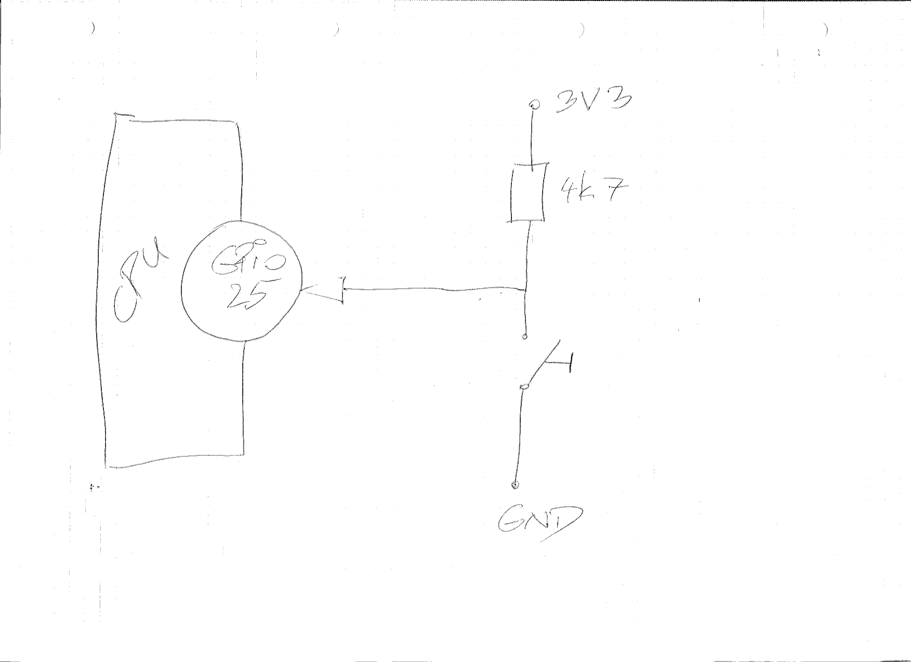

Coding: Raspi GPIO Interrupts (Slideshow)¶
Move to Raspberry Pi, Cross Compiling¶
Why? Use simple GPIO lines as interrupt sources.

|
 |
{kind=link}
Cross Compilation¶
Build our module against that kernel. Use
makeparametersARCHandCROSS_COMPILEfrom Raspberry Pi: Building the KernelLoad it ⟶ fine
Cross Compilation Sucks¶
No easy
arm-linux-gnuglibcon Fedora, have to build on targetCopy
linux/from host to targetWon’t compile there because already configured for host
# apt install flex bison libssl-dev bc
$ make oldconfig
Short (Legacy) GPIO API Introduction¶
#include <linux/gpio.h>
int gpio_request(unsigned gpio, const char *label);
void gpio_free(unsigned gpio);
int gpio_direction_input(unsigned gpio);
int gpio_direction_output(unsigned gpio, int value);
int gpio_to_irq(unsigned gpio);
Note
Check /sys/kernel/debug/gpio!
Implement New Event Type: Interrupt¶
New ioctl: MY_ACTIVATE_GPIO¶
Aha, third
ioctl()parameter:unsigned longAdd
ioctlwith just aprintk()on the kernel sideWrite test program,
test-activate-gpio.c
Interlude: _IO*() Macros¶
# ./test-activate-gpio 0 25
ioctl: Bad address
Fix
Emphasize on
ioctlnumbers ⟶ ABI breakage
Request GPIO¶
Add new
my_devicemethod,my_device_activate_gpio(), and call right into itgpio_request()(andgpio_direction_input())gpio_free()in_destroy()
Check
# cat /sys/kernel/debug/gpio gpiochip0: GPIOs 0-53, parent: platform/3f200000.gpio, pinctrl-bcm2835: gpio-25 ( |my_driver ) in lo
Unload driver ⟶ gone
Request Interrupt¶
gpio_to_irq()Implement dummy handler, only
printk()request_irq()/free_irq()
Add hardware, check /proc/interrupts
Test¶
Press switch ⟶ works
Hammer on it via
ioctl(), and at the same time generate interruptsDiscuss: “atomic context”
Discuss: “sleep while atomic”